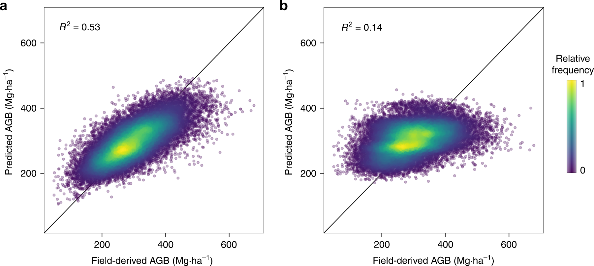
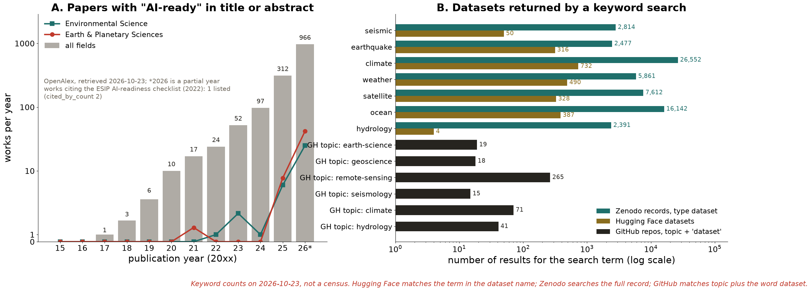
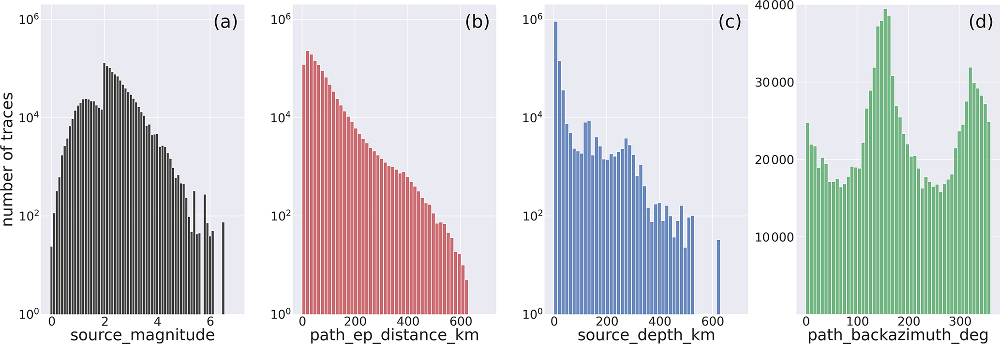
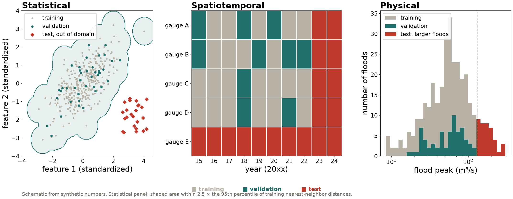

Session 10 · Fri Oct 23 · Book section 2.13
✅
Chapter 2 taught you to read, clean, repair, and describe geoscience data.
When is a dataset ready to train a model, and to test whether the model works somewhere new?
Reading: 2.13 AI-ready data
🛰️ Satellite & airborne 🌱 Biosphere 🦠 Biogeosciences
One random-forest map of central African forest biomass, scored two ways: R² = 0.53 when test plots are drawn at random, 0.14 when whole regions are held out, and close to zero beyond 100 km from the training plots.
Ploton, P., et al. (2020). Spatial validation reveals poor predictive performance of large-scale ecological mapping models. Nature Communications, 11, 4540. Figure 4, CC BY 4.0.
Inputs: satellite reflectance and climate layers. Target: field-measured aboveground biomass (Mg/ha). Same model, same data; only the partition changed.

(a) random 10-fold cross-validation; (b) spatial 44-fold cross-validation. Ploton et al. (2020), Fig. 4, CC BY 4.0.
A random split of spatially correlated plots reported R² = 0.53; holding out regions gave 0.14, the skill the map actually has away from field plots.

Works using the phrase “AI-ready” went from 97 in 2024 to 966 in 2026 so far, but only 42 of this year’s are in Earth and Planetary Sciences.
| Dataset | System | One sample | Size | Partition shipped | Best shows |
|---|---|---|---|---|---|
| STEAD (Mousavi 2019) | solid Earth | 3-component waveform: earthquake or noise | ~1.2 M traces | none described | B3 noise class |
| INSTANCE (Michelini 2021) | solid Earth | 3-component trace, 120 s at 100 Hz | ~1.2 M traces, 620 stations | none described | A2, B2 |
| WeatherBench 2 (Rasp 2024) | atmosphere | global ERA5 state at one time | 1959 to 2023 | 2020 held out | B7 time |
| ClimateBench (Watson-Parris 2022) | atmosphere | annual maps given forcing | Earth system model runs | SSP245 scenario held out | B7 physics |
| CAMELS (Newman 2015, Addor 2017) | land water | one catchment’s daily series | 671 catchments | none described | B1 units |
| Sen1Floods11 (Bonafilia 2020) | land water | 512 × 512 SAR chip, water mask | 4,831 chips, 11 floods | Bolivia held out | B5 labels |
| BigEarthNet v2 (Clasen 2024) | biosphere | Sentinel-1/2 patch, land-cover labels | 549,488 patches | geographic split | B7 space |
| CaFFe (Gourmelon 2022) | cryosphere | SAR image, calving-front label | 681 images | unseen glaciers | B7 space |
| OceanBench (Johnson 2023) | ocean | daily sea-surface-height map | 1 simulated year + real altimetry | held-out months, one satellite | B4 known truth |
Six of these nine datasets ship a partition that holds out a period, a region, or a forcing scenario.
🗂️ Catalog & compiled product 🪨 Solid Earth 📈 Seismology

Magnitude, epicentral distance, depth, back azimuth of about 1.2 million traces from about 50,000 Italian earthquakes. Michelini et al. (2021), ESSD, 13, 5509–5544, Fig. 3, CC BY 4.0.
The step at M 2 is deliberate: the authors kept most M ≥ 2 events and added 20,000 random M < 2 events to counter the Gutenberg–Richter imbalance.
A scientist can compute with the data without redoing the provider’s work.
The data also support training a model and testing whether it generalizes.
Analysis readiness is necessary for AI readiness but not sufficient: a clean, well-documented record from one station in one decade can still fail every generalization test.
| Criterion | What to check | Example from this course | |
|---|---|---|---|
| A1 Provenance | source, version or retrieval date, license, citation | NGL tenv3 files change daily: record the retrieval date (Session 4) | |
| A2 Homogenization | units, reference frame, time base, instrument changes | bucket versus engine-intake ship temperatures in 1945 (Session 5); P395 antenna steps (Session 1) | |
| A3 Quality and gaps | flags, gaps, sentinels, censoring and their cause | density zeros versus MgO zeros; a 5 mm detection limit (Session 5) | |
| A4 Structure and metadata | tidy tables or labeled arrays; units a script can read | CSV versus Parquet versus netCDF for the same field (Session 4) |
Every analysis-readiness criterion was already practiced in Chapter 2; the rubric collects them so a dataset can be scored.
| Criterion | Question | Geoscience example | |
|---|---|---|---|
| B1 Diversity | how many independent units: stations, events, regions, years? | 1.8 million QTM earthquakes, but one region and one network (Session 1) | |
| B2 Distribution | how are targets and inputs distributed; how rare is the class of interest? | flood days are 1.3% to 6.3% of days at the four 2.13 gauges; granite to andesite 5.6 : 1; magnitudes follow a power law | |
| B3 Noise | which variability is the instrument and which is signal for another question? | ocean microseism is noise for earthquake detection and signal for wave climate (Session 9) |
Count independent units, not rows: 99% of the 36,518 Pacific Northwest earthquakes in Session 5 came from one network, so they say little about other networks.
| Criterion | Question | Geoscience example | |
|---|---|---|---|
| B4 Augmentation | which transformations keep the physics? | adding recorded noise to earthquake waveforms keeps the physics; time-reversing a flood hydrograph does not | |
| B5 Labels | who labeled, how consistently; or can structure replace labels? | analyst phase picks vary in quality; years of unlabeled continuous waveforms allow self-supervised training | |
| B6 Dimensionality | samples versus features; input shape; intrinsic dimension | STEAD: 3 components × 6,000 samples; first PCA mode of a temperature field: 95.5% of variance (2.12) |
An augmentation is valid only if the instrument could have recorded the transformed sample.

Training and validation come from the same domain; the test set lies outside it along a stated axis: statistical, spatiotemporal, or physical.
| Partition | Drawn from | Tests | Used for |
|---|---|---|---|
| Training | the domain | the model can fit the relationships | fitting parameters |
| Validation | the same domain, independent units | the model interpolates within the domain | choosing hyperparameters, stopping training |
| Test, statistical | far from training in feature space | extrapolation in the inputs | reporting generalization |
| Test, spatiotemporal | a later period or a new region | transfer in space or time | reporting generalization |
| Test, physical | a different process, event size, or physics | transfer to conditions not sampled | reporting generalization |
In notebook 2.13 one flood classifier scores 0.74 within the domain, 0.70 on later years, and 0.20 at a gauge it never saw (average precision).
Each criterion scores 0 missing · 1 present but incomplete · 2 another team can verify it
Analysis readiness
AI readiness
Pairs, 8 minutes: pick one dataset from the catalog, ask your assistant to score it on the 11 criteria with evidence, then check two of its scores against the dataset’s own documentation.
A score counts only with its evidence: the file, page, or count that another team can check.
pixi run jupyter lab → 2.13_MLready_data.ipynbMonday: supervision concepts, classification and regression (3.1–3.2) · Chapter 2 quiz opens Monday
ESS 469/569 · Machine Learning in the Geosciences · Autumn 2026